Spectral Clustering
- Graph Partitioning
- Spectral Graph Partitioning
- Spectral Clustering Algorithm
- Motif-Based SPectral Clustering
- Summary
Graph Partitioning
何谓graph partitioning, 如下图，给定无向图\(G(V,E)\)， 将这些节点分为两个组：
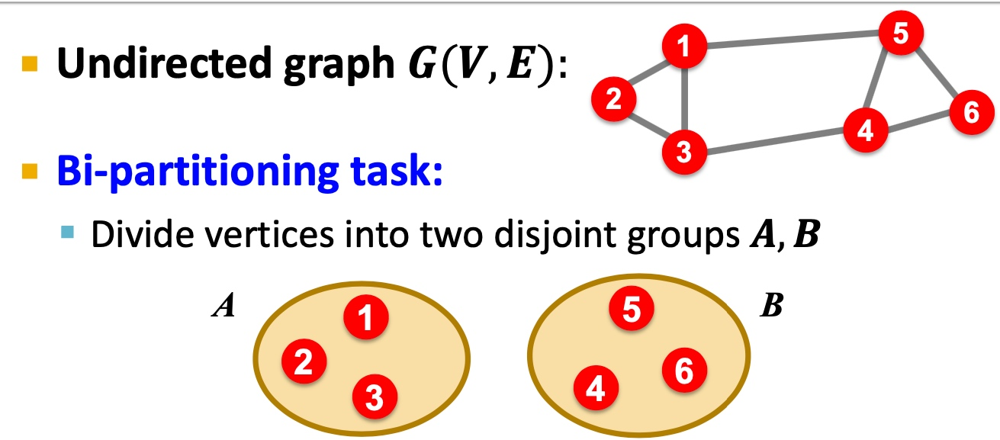
逻辑很简单，但是难点在于：
- 如何定义一个尺度，来保证图的切分是合理的：
- 组内成员连接尽可能多；
- 组与组之间连接尽可能少；
- 如何高效地识别这些分区；
Criterion
Cut(A,B): 如下图，图当中，两个点分别在两个分组的边的数量；
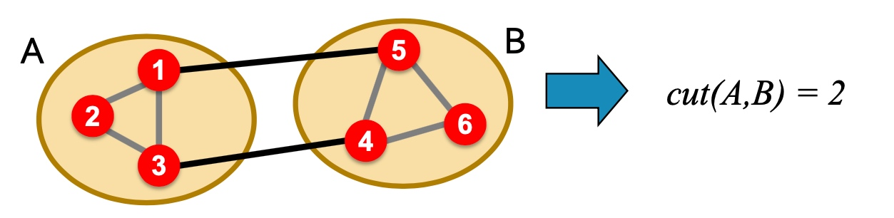
Minimum-cut
最小化图分组间的连接（如果有权重，则考虑权重）：
\[arg min_{A, B}\ Cut(A,B) \]这样会存问题：
- 仅仅考虑图当中分组的外部连接；
- 未考虑图中分组的内部连接；
因此，在下面图中，会出现，假如是minimum cut不是optimal cut
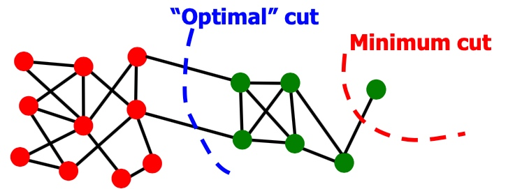
Conductance
与Minimum-cut逻辑不一样， Conductance不仅仅考虑分组间的连接， 也考虑了分割组内的“体积块”， 保证分割后得到的块更均衡，Conductance指标如下：
\[ \phi(A, B)=\frac{cut(A,B)}{min(vol(A), vol(B))} \]其中\(vol(A)\)指分组块A内节点所有的权重度之和；
但是，得到最好的Conductance是一个np难题。
Spectral Graph Partitioning
假定A为无连接图G的链接矩阵表示，如(i,j)中存在边，则\(A_{ij}=1\)，否则为0；
假定x是维度为n的向量\((x_1, ..., x_n)\)，我们认为他是图当中每个节点的一种标签；
那么\(A*x\)的意义是， 如下图， \(y_i\)表示i的邻居节点与对应标签和：
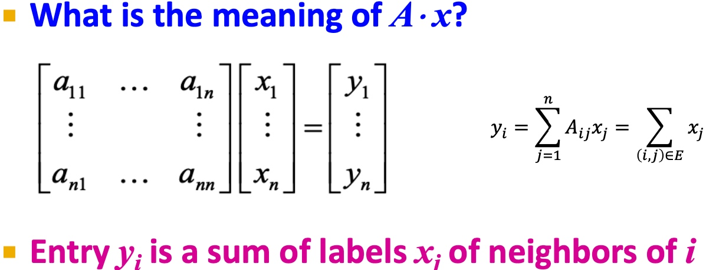
令\(Ax=\lambda x\)，可以得到特征值：\(\lambda_i\), 和对应的特征向量\(x_i\)。对于图G， spectral(谱)定义为对应特征值\({\lambda_1, \lambda_2, ..., \lambda_n}\)，其\(\lambda_1 \leq \lambda_2 \leq ... \leq \lambda_n\) 对应的特征向量组\({x_i, x_2, ..., x_n}\)；
** d-Regular Graph 举例 **
假定图当中每个节点的度均为\(d\)，且G是连通的，即称为\(d-Regular Graph\)。
假定\(x = (1,1,...,1)\)，那么\(Ax = (d, d, ..., d) = \lambda x\)， 故会有对应的特征对：
且d是A最大的特征值（证明课程未讲）
d-Regular Graph on 2 Components
假定G有两个部分， 每个部分均为d-Regular Graph，
那么必然存在：
\(x^{'}=(1,...,1,0,...,0)^T\)， \(A x^{'}=(d,...,d,0,...,0)^T\)
\(x^{''}=(0,...,0,1,...,1)^T\)， \(A x^{'}=(0,...,0,d,...,d)^T\)
所以必然存在两个特征值\(\lambda_{n} = \lambda_{n-1}\)， 推广起来，如果图G中两个部分互相连通，如下图， 则最大的特征值很近似：
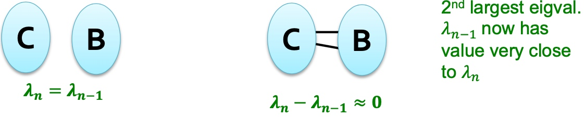
推广， 这里有点没有太理解：
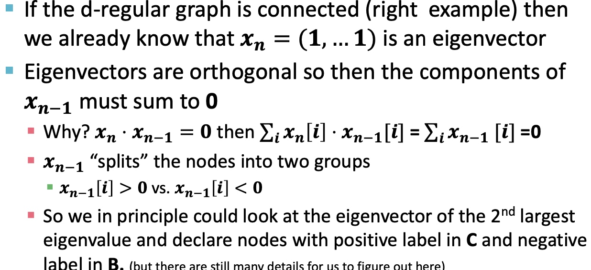
Matrix Representations
邻接矩阵A
- 对称矩阵；
- n个实数特征值；
- 特征向量均为实数向量且正交:
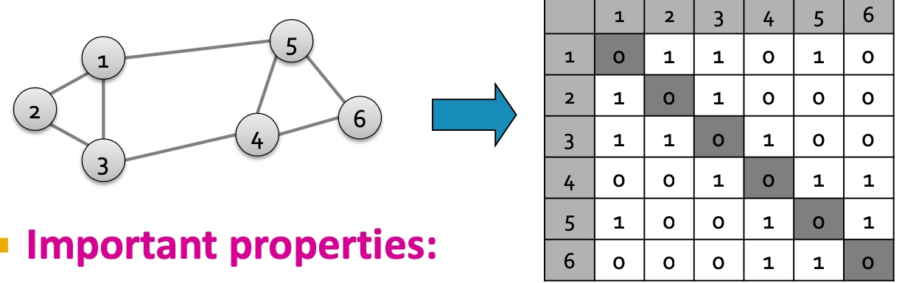
度矩阵
- 对角矩阵；
- \(D=[d_{ii}]\), \(d_{ii}\) 表示节点i的度；
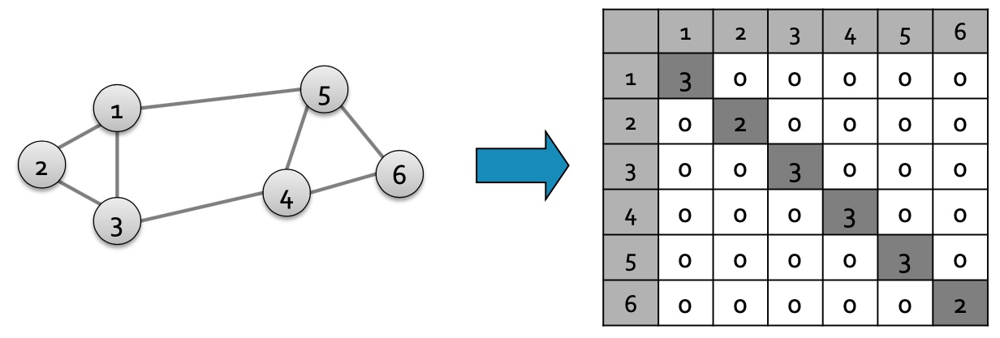
Laplacian matrix
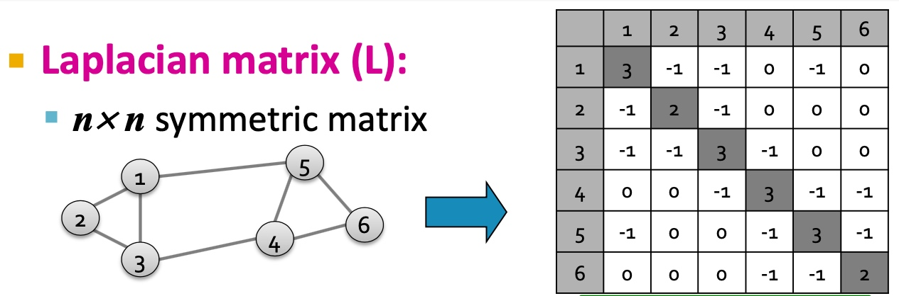
Laplacian matrix 有以下特点：
- 令x=(1,...,1)则\(L*x=0\)， 故\(\lambda=\lambda_{1}=0\)；
- L的特征值均为非负实数；
- L的特征向量均为实数向量，且正交；
- 对于所有x，\(x^{T}Lx=\sum_{ij} L_{ij}x_{i}x_{j} \geq 0\)；
- L能够表示为\(L = N^{T} N\)
Find Optimal Cut
分组表示(A,B)为一个向量，其中
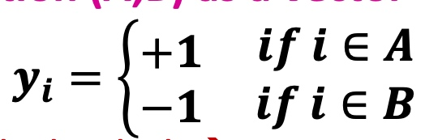
问题转换为寻找最小化各部分间连接：
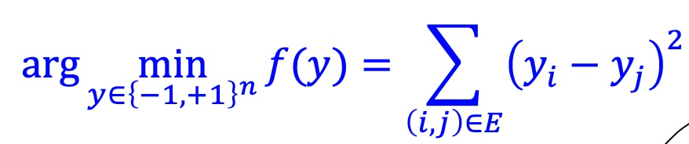
相关证明间slide，这里老师没有做过多解读；
Spectral Clustering Algorithm
基础方法
如下图：主要包括三个步骤：
- 预处理：构造图的表示， 包括Laplacian Matrix；
- 矩阵分解：
- 计算Laplacian Matrix的所有的特征值与特征向量；
- 将节点使用特征向量表示（对应\(\lambda_2\)的特征向量\(x_2\)）；
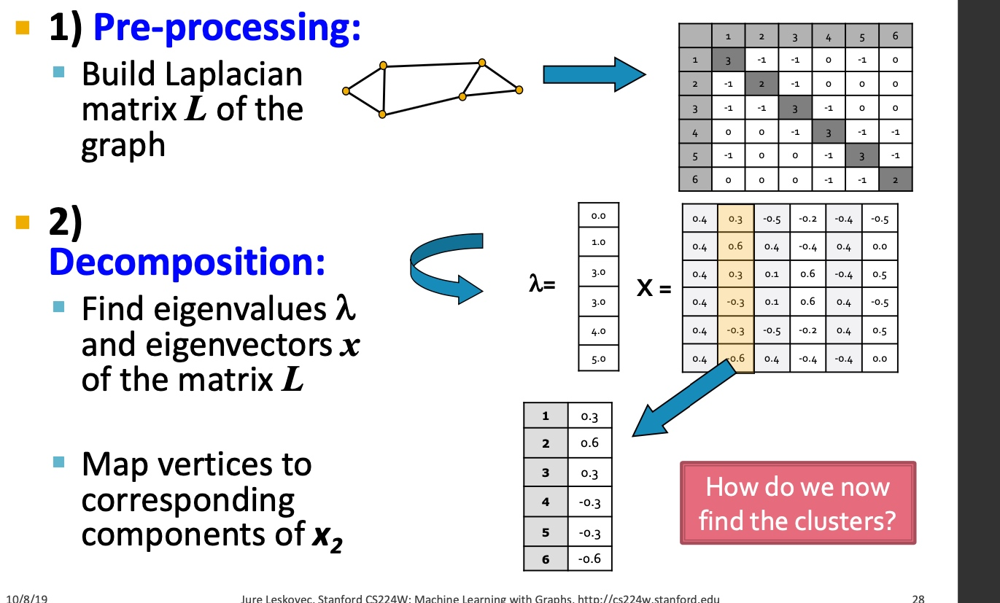
- 聚类， 将节点的特征表示，排序， 按大于0与小于来进行拆分：
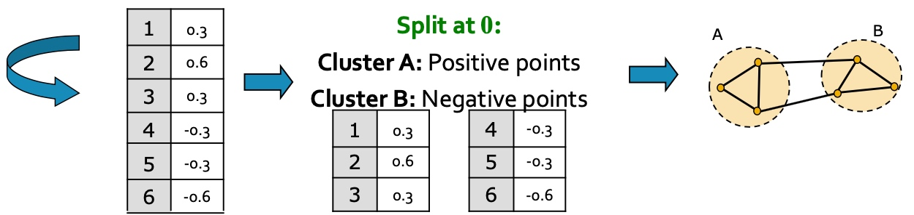
以下是多个实例， 看起来使用\(\lambda_{2}\)对应的特征向量\(x_2\)来切分是比较合适的：
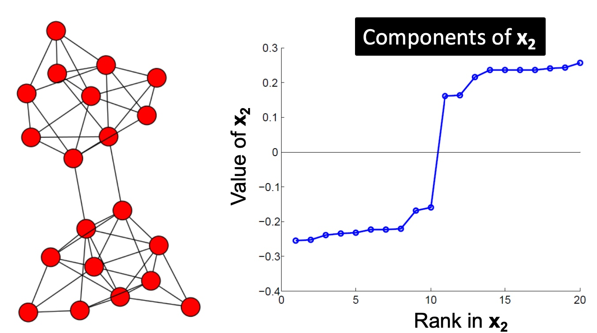
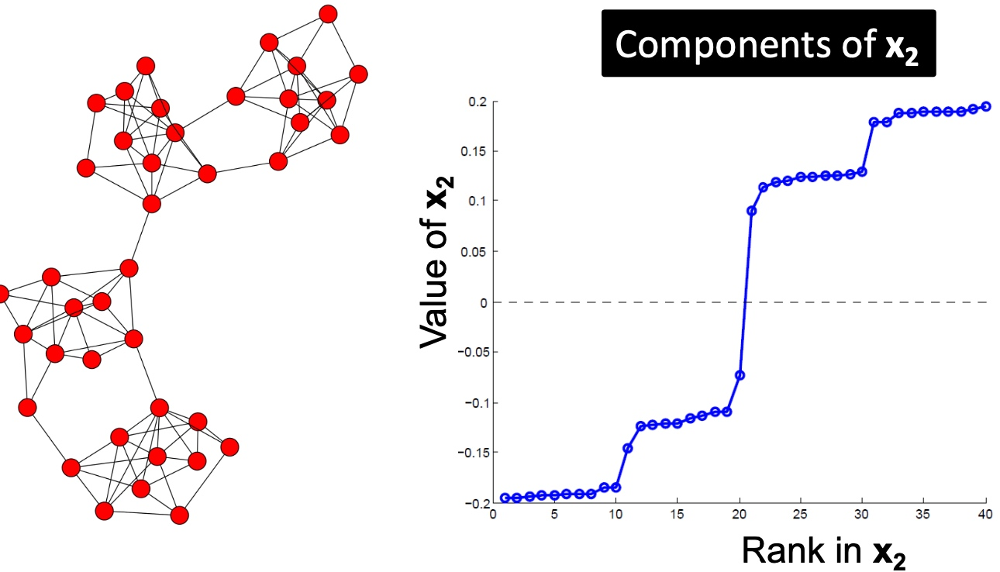
k-Way Spectral Clustering
如何将图切分为k个聚类呢？
- 递归利用二分算法，将图进行划分。但是递归方法效率比较低，且比较不稳定；
- 使用降维方法，将节点表示为低维度的向量表示，然后利用k-mean类似的方法对节点进行聚类；
那么如何选择合适的k呢，如下图，计算连续的特征值之间的差值，选择差异最大的即为应该选择的k？
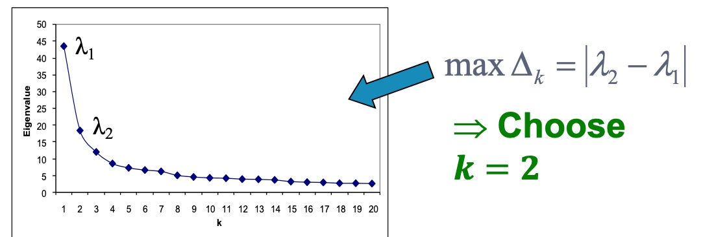
Motif-Based SPectral Clustering
是否能够通过专有的pattern 来进行聚类呢？上一篇文章有提到motif， 如下图：
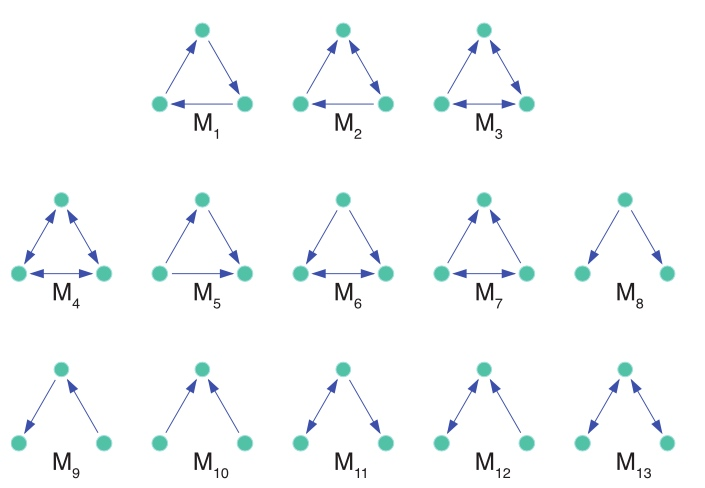
给定motif，是否能够得到相应地聚类结果：
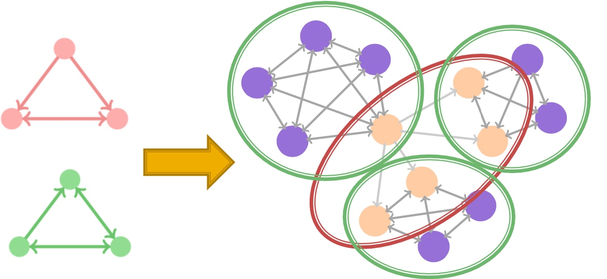
答案当然是可以的， 而且也是复用前面的逻辑
Motif Conductance
和上文中， 按边来切分逻辑不通， conductance指标，应该表征为motif的相关指标，如下：
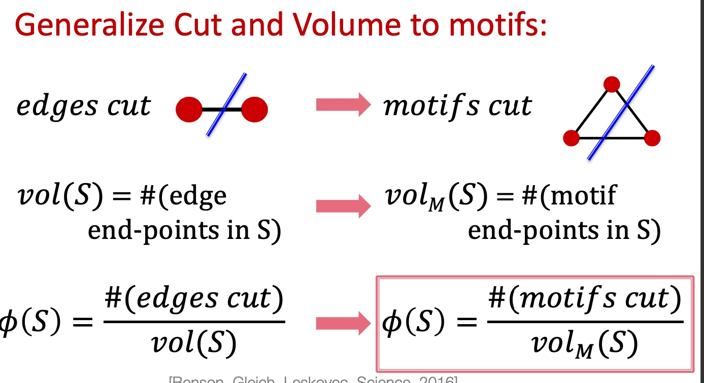
这里给出一个计算的例子， 如下图， 该出模式分子为切分经过的该模式数量， 分母为该模式覆盖的所有节点数量：
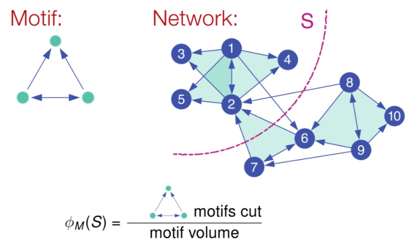
所以motif的谱聚类就变成了给定图G与Motif结构来找到\(\phi_{M}(S)最小的\)， 很不幸， 找到最小化motif conductance也是一个np问题；
同样地，也专门提出了解决motif 谱聚类的方法：
- 给定图G和motif M；
- 按M和给定的G，生成新的权重图\(W_{(M)}\);
- 在新的图上应用spectral clustering方法；
- 输出对应的类簇；
大致过程如下图所示：
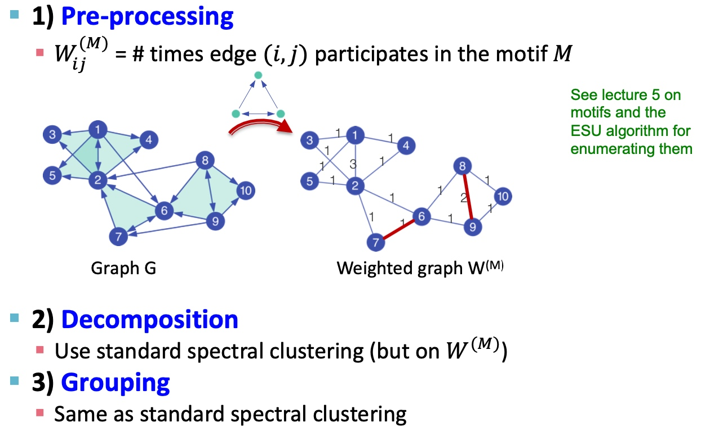
具体过程如下：
-
给定图G与motif M， 计算权重图\(W^(M)\)：
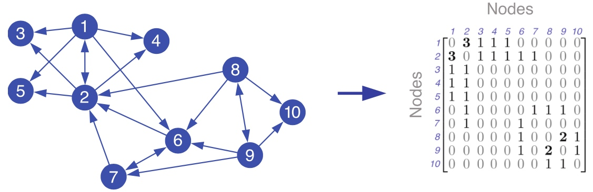 -
应用谱聚类， 计算其Laplacian Matrix的特征值与特征向量，得到第二小的特征向量，：
-
按升序对第二小特征值的对应的特征向量进行排序（对应的节点ID需要保存以计算motif conductance）， 以\(S_r = {x_1, ...,x_r}\)计算motif conductance值，选择最小地的值即为划分点， 如下图，1,2,3,4,5为一个类：
Summary
本章我们学习了谱聚类相关的工作， 首先，讲了关于表征切分图的指标cut(A,B)以及conductance，如何切分图以及为什么切分图是一个np难题，然后提出了利用谱聚类的方法来解决该问题，从而学习到了degree matrix, Laplacian matrix等概念； 而后提出是否有按motif来进行图聚类的方法， 并基于谱聚类的方法来解决来转换原图为带权重的图来解决；
Motifs and structural roles in networks
Subgraphs
何谓motif？ 图中反复出现的相互连接的模式，有以下三个特点：
- Pattern：小的能导出的子图；
- Recurring：频繁出现；
- Significant：模式的出现明显高于预期，如类似的random genderated networks中的模式；
Motif: Induced Subgraphs
Induced Subgraph如下图所示，图中红色框虽然也是3个节点构成的子图，但是该子图与待匹配的子图不匹配（连接不一致），而蓝色的三角框中的子图与待匹配的子图匹配， 匹配的意思是指必须是出现在待匹配子图里所有节点的边，如果不是待匹配节点之间的边，则不匹配；
Motifs: Recurrence
如下图，右侧图中出现了4个待匹配的motif，motif之间可以相互重叠；
Motif： Significance
如下图， 该motif在真实的网络中出现的频率要对类似的随机网络出现的频率要高的多， 我们成为其显著性明显；
显著性通常是和随机性网络做对比，通常使用\(Z_i\)来描述motif i的显著性， 其中\(N_{i}^{real}\)表示真实网络中motif i的数量， \(N_{i}^{rand}\)表示在随机网络中motif i的数量：
\[Z_i = \frac{(N_{i}^{real}-N_{avg\ i}^{rand})}{std(N_{i}^{rand})} \]上面的计算会随着网络规模的不同而有数值的变化，而大的网络会倾向于有更大的Z-score， 归一化处理之后，使用Net significance profile来表示，motif i的SP计算公式如下：
\[SP_{i}= \frac{Z_{i}}{\sqrt{\sum_{j}{Z_{j}^{2}}}} \]Configuration Model
配置一个和真实网络相同的度序列的随机图可以分为三步：
- 按节点的度序列生成Node spokes；
- 随机从nodes spokes中挑选两个连接起来；
- 根据源节点和目标节点，将步骤2中聚合起来，即形成和真实网络相同度序列的随机网络；
Alternative for Spokes: Switching
另一个产生于源图类似的图的方法就是随机做边交换，具体步骤如下：
- 从源图中随机找出边如，A->B, C->D，随机交换边的终点产生边A->D, C->B， 如果交换导致自己指向自己，则不交换；
- 重复1中，Q次， 当Q足够大时，即可生成随机图；
本节总结
经过上面的定义与解释之后，我们就可以定义如何检测一个motif：
- 在真实图中，统计induced subgraph的个数；
- 统计生成的随机网络中的induced subgraph的个数， 这里随机生成的网络，可以生成多个做对比；
- 计算Z-score， 那些高的Z-score就是我们需要的motif；
motif也有相应的变种， 如不同的频率概念、不同的显著性计算标准、null model的不同约束等等，但基本上都是万变不离其宗；
Graphlets: Node Feature Vectors
Graphlet是基础的由节点构成的基础子图单位，由两个节点开始，下图是2-5个节点的graphlet示例图：
那么，如何由graphlet来改造节点的特征呢？
之前我们提到的度，是指每个节点能够接触到的边数，这里我们扩展Graphlet degress vector，用来表示节点v能够接触到的graphlet的数量， 如下图，graphlet有a, b, c, d, 注意这里d和c画在一张图上, 这样我就可以用2, 1, 0, 2来表示节点V：
Graphlet degree vector的意义在与它提供了对于一个节点的本地网络拓扑的度量，这样可以比较两个节点的GDV来度量它们的相似度。由于Graphlet的数量随着节点的增加可以很快变得非常大，所以一般会选择2-5个节点的Graphlet来标识一个节点的GDV。
Finding Motifs and Graphlets
在一个图里识别出一种特定大小的motifs和graphlet，并计算它的数量是非常难的一个问题。识别是否是同构子图本身就是一个NP-hard的问题：计算量也会随着节点数的增加而呈指数增长，因此， 一般只识别节点数较小如3-8的motif或者graphlet。
Exact Subgraph Enumeration###
ESU从一个节点\(v\)开始，算法分为两个集合：\(V_{subgraph}\):表示当前构造的子图，\(V_{extension}\)：表示能够扩展motif的候选节点， 将满足以下两个条件的节点\(u\)加入到\(V_{extension}\)：
- \(u\)的节点id要大于v的id；
- \(u\)只能是新加入加点\(w\)的邻居，而不能是\(V_{subgraph}\)里的节点邻居；
伪代码逻辑如下：
如下图就很容易理解了， 从不同的点出发， 比如node 1， node 1的邻居只有3， 所以开始extendsion为3， node2， 其邻居只有3， 所以extension为3， node 3， 其邻居有1、2、4、5，为保证id要大于node 3， 所以extension为4、5， node 4， 邻居有3、5， 保证id大于4所以extension为5， 第二层将exetension加入到subgraph， 且此时exetension要是新加入节点，如最左边分支，新加入节点为3，exetension要讲node 3的邻居加入，且保证大于node1 ， 即exetension变为2，4，5；左起第二个， 将exetension 中node 3加入， node3的邻居节点有1、2、4、5， 其中只有4、5大于原先subgraph中的2， 所有exetension为4、5， 以此类推即可，最终所有大小为3的子图即可遍历出来；
到目前为止， 我们就可以遍历出所有大小为的子图， 接下来我们只需要统计下这些图即可， 如下图所示， 需要判断是否为同构图，即拓扑结构完全一致：
Graph Isomorphism
如何判定两个图是同构？
如果图\(G\)和\(H\)是同构的，那么必定存在一个双向映射\(f: V_{(G}->H_{(H)}\)保证任意两个节点u和v在图G里面是相邻的，则\(f ( u )\) 和\(f ( v )\)在图H里也是相邻的, 检查图是否重构是一个NP难题
Structural roles in networks
Role: 角色， 是对节点在网络中功能的描述， 是有相同结构特征的点，相同角色的节点并不一定直接相连，而Group/Communities(社群)， 是彼此相互密集连接的节点群；
视频中举了个例子，假定一个计算机系构建一个社交网络，其中：
- 角色指： 教职、职员、学生；
- 社群指： AILab、Info Lab、 Theory Lab等；
如果节点u和节点v和所有其他节点有相同的关系，则说明节点u和节点v在结构上等同， 如下图中u和v完全相同；
Discovering Structural Roles in Networks
为什么要研究图当中的role ？如下图：
RoIX: AutoMatic Discovery of nodes' structural roles in network
RoIX特点如下：
- 非监督学习方法；
- 无需先验知识；
- 支持多种角色分类；
- 按边数线性扩展；
RoIX过程如下图， 其中最重要的Recursive Feature Extraction.
Recursive Feature Extraction是基于图的结构详细，从某一节点出发，聚合该节点的特征，如有向图中，该特征未出度、入度、度等等，其次基于该node的邻居、包含该节点的可导出子图，这称之为Egonet，也会提取Egonet中节点的特征。以此类推，用这种方法提取到的特征，是指数级增长，后续会使用裁剪技术将部分特征裁剪掉；
最终，每一个节点会由如下图的向量表示， 然后采用non negative matrix factorization（KL离散度距离来评估似然度） 即可完成流程图中node * role matrix与role * feature matrix的生成：


Copyright © 2015 Powered by MWeb, Theme used GitHub CSS.